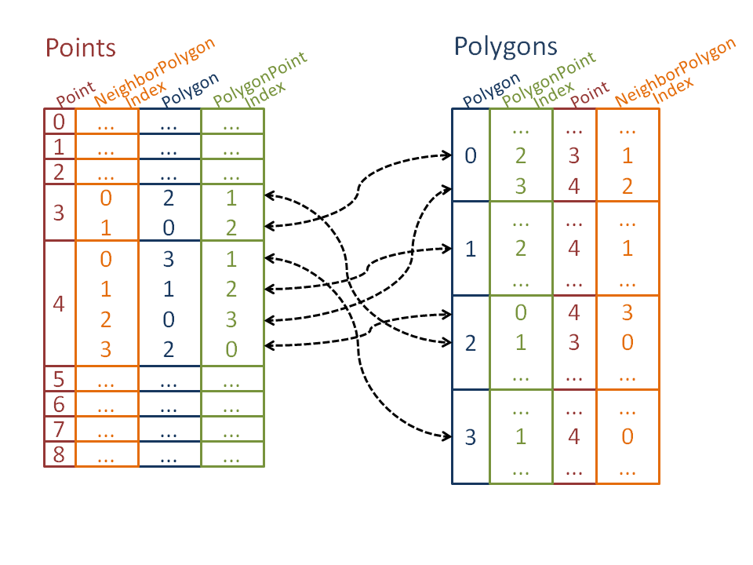
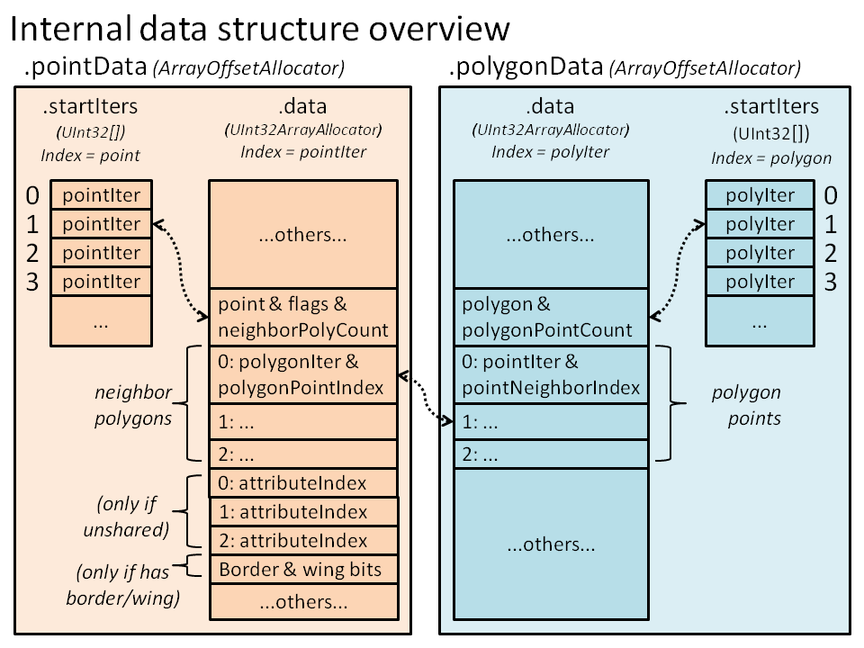

PolygonMesh’s structure¶
概要¶
PolygonMesh はポリゴン群で作られた幾何学表面(geometric surface)を表し、それぞれのポリゴンは3つ以上の3Dポイント(以下”頂点”)の閉じたループで定義されます。1つの頂点は複数のポリゴンを結びつけることができます。 PolygonMesh の基本定義はとても標準的ですが、 PolygonMesh 構造はメモリ消費とパフォーマンスのバランスを取ることを可能にするという特性を含んでいます。
構造はインデックス付けされた頂点とポリゴンで識別できます。エッジやポリゴン頂点(フェース頂点(face-vertex))は含まれません。詳細は ポリゴンメッシュ をご覧ください。
GeometryAttribute 要素は、OpenGLなどのAPIハードウェアドローイングのダイレクトマッピングのために整列されています。詳細は ポリゴンメッシュアトリビュート をご覧ください。
メッシュ構造を変更する際には、いくつかの特別なルールが適用されます。詳細は メッシュ構造の変更 をご覧ください。
- the PolygonMesh structure tries to reduce memory consumption and fragmentation by grouping most of its topological data into a few contiguous arrays, which can improve speed, particularly for larger meshes. See 内部データの構成 for more details.
ポリゴンメッシュは配列を大量に使用するため、 通常`unguarded` KLコンパイルは大半のポリゴンメッシュメソッド群で30％の高速化をもたらします
注釈
特に記述がない限り、メッシュの読み込みを行う関数はメッシュ構造やアトリビュートの共有レイアウトが変更されない場合にはスレッド セーフです。メッシュまたはアトリビュートの共有レイアウトを変更する関数はスレッド セーフではありません。
ポリゴンメッシュトポロジー¶
PolygonMeshTopology は1つの PolygonMesh のトポロジー情報をカプセル化します。これは主に頂点データとポリゴンデータの格納という2つのシンメトリ構造から構成されます。各頂点はインデックスに関連付けられ、隣接するポリゴンのコーナー群 (ポリゴン頂点) へのリファレンスを格納したコンパクトな配列を持っています。同様に、各ポリゴンもインデックスに関連付けられ、ポリゴンに連結した頂点群へのリファレンスを格納したコンパクトな配列を持っています。
次の図は、頂点やポリゴンそしてそれらのローカルインデックス ( ‘neighborPolygonIndex’, ‘neighborPointIndex’ ) の概念を示しています。

次の表は、ストレージ及びこれらのコンポーネント間の関係の概略図です。
この例では、上記図で示した構造のレポートを行うために PolygonMesh.getDesc 関数を使用しています。
/*
** Example: Structure dump of a 2X2 grid:
*/
require Geometry;
operator entry() {
//Add a 2X2 grid if size 2.0
PolygonMesh p();
p.addPlane(Xfo(), 2.0, 2.0, 2, 2);
report( p.getDesc(false) );
}
/*
** Output:
Mesh: pointCount: 9 polygonCount: 4 nbAttributeVectors: 9
Points (adjacent polygons as 'polygon.neighborPolygonIndex',
borders as '|', closed wing starts as '<<'):
0: 1 polygons: |0.1
1: 2 polygons: |0.0, 1.1
2: 1 polygons: |1.0
3: 2 polygons: |2.1, 0.2
4: 4 polygons: <<3.1, 1.2, 0.3, 2.0
5: 2 polygons: |1.3, 3.0
6: 1 polygons: |2.2
7: 2 polygons: |3.2, 2.3
8: 1 polygons: |3.3
Polygons (connected points as 'point.polygonPointIndex', borders as '|'):
0: 4 points: 1.0 |, 0.0 |, 3.1, 4.2
1: 4 points: 2.0 |, 1.1, 4.1, 5.0 |
2: 4 points: 4.3, 3.0 |, 6.0 |, 7.1
3: 4 points: 5.1, 4.0, 7.0 |, 8.0 |
*/
様々なコンポーネント型やインデックスの詳細について:
point: インデックスで表され、１つの頂点は可変数のポリゴン (または無し) に接続されます。ポリゴンメッシュの頂点は vertex と同じです。頂点の特定データを取得または設定する PolygonMesh 関数は、通常それぞれ .getPoint または .setPoint で開始します。
polygon: インデックスで表され、1つのポリゴンは3つ以上の頂点の順序付けリストで定義されます。ポリゴンの特定データを取得または設定する PolygonMesh 関数は、通常それぞれ .getPolygon または .setPolygon で開始します。
neighborPolygon: 1つの頂点と、頂点を取り囲むポリゴン群の内の１つとのペアです。 neighborPolygon は、頂点インデックスと neighborPolygonIndex によるインデックスのペアで表されます。 neighborPolygonIndex は頂点ごとに割り振られた [0 ~ PolygonMesh.getPointPolygonCount ()-1 ]の範囲のローカルインデックスで、各インデックスは頂点に接続するポリゴンに相当します。 neighborPolygon と polygonPoint (後述します)は同じ位置を指しますが、それぞれ’頂点からの相対位置’と’ポリゴンからの相対位置’です。
polygonPoint: 1つのポリゴンと、頂点に接続されたポリゴンの角にあたる部分( フェース頂点 や ポリゴンノード と呼ばれるもの)とのペアです。 polygonPoint は、ポリゴンインデックスと polygonPointIndex によるインデックスのペアで表されます。 polygonPointIndex はポリゴンごとに割り振られた [ 0 ～ PolygonMesh.getPolygonSize ()-1 ] の範囲のローカルインデックスで、各インデックスはポリゴンに接続する頂点に相当します。 neighborPolygon と polygonPoint は同じ位置を指しますが、それぞれ’頂点からの相対位置’と’ポリゴンからの相対位置’です。
PolygonMeshEdge: 大半のメッシュ構造とは対照的に、ポリゴンエッジ群はファーストクラスコンポーネントではありません。しかし、ポリゴンインデックスと頂点インデックスのペアで定義される構造体によって表されます。
注釈
PolygonMesh (object) 構造はエッジとポリゴン頂点群(フェース頂点)を明確なインデックスに関連付けせず、助長を回避することでよりコンパクトにできます。一般的には、エッジインデックスはDCCツール等で他のメッシュに対し転送する、もしくは転送されることは無いのでこれは問題にはならないでしょう。エッジやポリゴン頂点のテーブルの格納を回避することは、同等のハーフエッジ構造よりも50%のデータ縮小を可能にします。そして、メモリの局所性によって大半のオペレーションが高速で実行されます。
ポリゴンメッシュ構造データの構成方法に関する詳細は 内部データの構成 を参照してください。
境界チェック(Bounds checking)¶
PolygonMesh の内部構造は、単一のメモリ バッファーに複数の小さい配列を格納します。このためKL guarded モードでは、大半の関数でインデックスが境界を順守するかどうかの検証を（特殊な Fabric_Guarded KLコンディションを使用し）明示的に行います。たとえば..
point と neighborPolygonIndex を取得する関数で、後者は [0 ～ PolygonMesh.getPointPolygonCount -1] の範囲内であると保証されます。
polygon と polygonPointIndex を取得する関数で、後者は [0 ～ PolygonMesh.getPolygonSize -1] の範囲内であると保証されます。
これらの正確な限界値のチェックと PolygonMesh (object) では配列の使用率が高いことが合わさり、通常 unguarded コンパイルは大半のPolygonMeshメソッドで30%の高速化をもたらします。
ポリゴンメッシュアトリビュート¶
他の Geometry 型のように、 PolygonMesh はアトリビュート群を GeometryAttributes コンテナに格納します。このことは、全ての GeometryAttribute の値は整列したインデックスで、かつ同じサイズを持つことを意味し、アトリビュート値の配列をOpenGLのようなドローイングバッファーに直接マッピングすることを可能にします。しかし、頂点の周りの共有の値をサポートすると同時にグローバル値の配置を維持するには、 PolygonMesh にアトリビュートの管理機能の追加を必要とします。そしてこれはAPIに影響を与えます。
PolygonMesh のAPIにおいて、 attributeIndex は GeometryAttribute の値の配列（ GeometryAttributes.size のエレメントの合計）と関連があります。 attributeIndex と頂点インデックスが一致するかは、頂点の周りのアトリビュート値の共有（もしくは分割）レイアウトに依存する重要な問題です。様々なアトリビュートの中で１つでも頂点を分割したアトリビュートが存在するなら、頂点と連結する各 polygonPoint の値は異なる attributeIndex`に格納されます。一方[0～:kl-ref:`PolygonMesh.pointCount () - 1] の範囲内の attributeIndex は、同じインデックスの頂点に所有します。
以下の図では、分割したアトリビュート値が attributeIndex へ追加で割り当てられる方法を紹介します。

頂点位置の値についても、グローバルアトリビュートの配列を確保するために順に沿って複製されることに注意してください。
次の例では、アトリビュート値と共にメッシュ構造をダンプします。 attributeIndex は共有していない(分割した)アトリビュート値を持つ頂点群のレポートのみです。
/*
** Example: dump of the structure of a 2X2 grid:
*/
require Geometry;
operator entry() {
//Add a 2X2 grid if size 2.0
PolygonMesh p();
p.addPlane(Xfo(), 2.0, 2.0, 2, 2);
//Set the weights of polygons 0 and 1 to 1.0, and
//the weiths of polygons 2 and 3 to 0.0.
Ref<ScalarAttribute> weights = p.getOrCreateScalarAttribute('weights');
for( UInt32 polygon = 0; polygon < 4; ++polygon ) {
for( UInt32 polygonPointIndex = 0; polygonPointIndex < 4; ++polygonPointIndex )
p.setPolygonAttribute( polygon, polygonPointIndex, weights, polygon < 2 ? 1.0 : 0.0 );
}
report( p.getDesc(true) );
}
/*
** Output:
Mesh: pointCount: 9 polygonCount: 4 nbAttributeVectors: 12
Points (adjacent polygons as 'polygon.neighborPolygonIndex',
borders as '|', closed wing starts as '<<',
unshared attribute as value@attributeIndex ):
0: 1 polygons: |0.1
Attr positions:{x:-1.0,y:+0.0,z:-1.0}
Attr weights:+1.0
1: 2 polygons: |0.0, 1.1
Attr positions:{x:+0.0,y:+0.0,z:-1.0}
Attr weights:+1.0
2: 1 polygons: |1.0
Attr positions:{x:+1.0,y:+0.0,z:-1.0}
Attr weights:+1.0
3: 2 polygons: |2.1, 0.2
Attr positions:{x:-1.0,y:+0.0,z:+0.0}
Attr weights:+0.0@10 +1.0@3
4: 4 polygons: <<3.1, 1.2, 0.3, 2.0
Attr positions:{x:+0.0,y:+0.0,z:+0.0}
Attr weights:+0.0@9 +1.0@4 +1.0@4 +0.0@9
5: 2 polygons: |1.3, 3.0
Attr positions:{x:+1.0,y:+0.0,z:+0.0}
Attr weights:+1.0@5 +0.0@11
6: 1 polygons: |2.2
Attr positions:{x:-1.0,y:+0.0,z:+1.0}
Attr weights:+0.0
7: 2 polygons: |3.2, 2.3
Attr positions:{x:+0.0,y:+0.0,z:+1.0}
Attr weights:+0.0
8: 1 polygons: |3.3
Attr positions:{x:+1.0,y:+0.0,z:+1.0}
Attr weights:+0.0
Polygons (connected points as 'point.polygonPointIndex', borders as '|'):
0: 4 points: 1.0 |, 0.0 |, 3.1, 4.2
1: 4 points: 2.0 |, 1.1, 4.1, 5.0 |
2: 4 points: 4.3, 3.0 |, 6.0 |, 7.1
3: 4 points: 5.1, 4.0, 7.0 |, 8.0 |
*/
以下のメソッド群では、明示的なアトリビュート値をセットすることが可能です。
頂点共有の値(一律の値)： PolygonMesh.setPointAttribute (Size point, io GeometryAttribute attribute, Value value): これらメソッド群は、同じ頂点でも非共有のアトリビュートがある場合に備えて、すべての値が明示的な設定であると保証します。 PolygonMesh.setPointPosition と PolygonMesh.setPointNormal の特別なメソッドは類似しています。これらメソッドはアトリビュートの共通レイアウト( attributeIndex )を変更せず、レイアウトが変更しない場合はスレッドセーフです。
注釈
これらメソッドは、GeometryAttribute型(例えば Vec3Attribute )の特定のセットのみで定義されています。 カスタムアトリビュート型を含むような他の型では、コード内で似たような関数を定義することで簡単に機能を拡張します。
頂点の周りで共有が解除される可能性のある値:
隣接頂点ごと: PolygonMesh.setPointAttribute (Size point, Size neighborPolygonIndex, io GeometryAttribute attribute, Value value)
ポリゴン頂点ごと: PolygonMesh.setPolygonAttribute (Size polygon, Size polygonPointIndex, io GeometryAttribute attribute, Value value)
これらのメソッドは、特定の隣接するポリゴン(ポリゴン頂点)に値を設定します。それらは、以前に設定された値との比較によって頂点の共有が維持できるかどうかをチェックし、可能でない場合には新しい attributeIndex を割り当てます。これらのメソッド群は、アトリビュートの共有レイアウト( attributeIndex )を変更するのであればスレッド セーフでは”ありません”。
注釈
これらメソッドは、GeometryAttribute型(例えば Vec3Attribute )の特定のセットのみで定義されています。 カスタムアトリビュート型を含むような他の型では、コード内で似たような関数を定義することで簡単に機能を拡張します。
注釈
値の共有を正しく管理するために、ポリゴンメッシュは内部でアトリビュートごとの Boolean initialized 状態を管理します。それは明示的に設定された値と既定値の両者の区別をすることができます。
PolygonMesh.resetAttributeAndAvoidSharingChanges メソッドは、不要な分割および既存のアトリビュートの共有レイアウト( attributeIndex )を維持しようとしたアトリビュート値を無効にすることができます。
attributeIndex は PolygonMesh.getPointAttributeIndex か PolygonMesh.getPolygonAttributeIndex メソッドのいずれかを使用して取得できます。
PolygonMesh.arePointAttributesUniform と PolygonMesh.isPointAttributeUniform は、それぞれ全てまたは特定のアトリビュートで値が１つのポイントで共有されているかどうかを教えてくれます。
メッシュは描画API(OpenGLなど)で使いやすい整列されたアトリビュート値を維持するので、トライアングル描画リストは attributeIndex の3つセットと直接一致します。 PolygonMesh.generateAttributesTriangleList メソッドはそのリストを返します。
ボーダーとウィング¶
大半の頂点は、通常規則的なサーフェース( manifold )で形成するポリゴンに接続されいると同時に、 borders と wings といった特別なトポロジーの特徴を持っています。注意して処理しない場合、これらの珍しい機能はメッシュ構造を扱うときの問題の原因になります。
border は1つのポリゴンに隣接する境界エッジです。
wing は同じ頂点に接続しているポリゴン群のセットであり、その頂点に対して相対的に隣接するグループです。つまり wing は、指定された頂点の周りの非境界エッジ群を横切ることができるポリゴン群のひとまとめのことです。
オープンウィング は2本の境界エッジで区切られたウィングです。 オープンウィング は1つ以上のポリゴン群を含めることができます。
クローズドウィング は、ウィングのすべてのエッジが境界エッジではないポリゴンのループによって形成されます。 クローズドウィング には2つ以上のポリゴンが含まれます。
.
頂点ポリゴン群が順序付けされたとき (頂点ポリゴンの順序付けについては メッシュ構造の変更 を参照してください)、指定した頂点に対してウィングが持つ連続した polygonNeighborIndex と同じポリゴン群が保証されます。
イラストではウィングとボーダーの概念を示します。

この例では、さまざまな関数を使用して頂点0のウィングとボーダーの情報を収集します。メッシュは、前の図に対応しています。
/*
** Example: Getting border and wing information
*/
require Geometry;
operator entry() {
//Create the 2 wings structure around point 0
PolygonMesh p();
p.beginStructureChanges();
p.createPoints(8);
//Open wing: polygons 0 and 1
p.addPolygon(0,3,2);
p.addPolygon(0,2,1);
//Closed wing: polygons 2..5
p.addPolygon(0,5,6);
p.addPolygon(0,6,7);
p.addPolygon(0,7,4);
p.addPolygon(0,4,5);
p.endStructureChanges();
//Get border information around point 0
Size pointPolygonCount = p.getPointPolygonCount(0);
for( Size i = 0; i < pointPolygonCount; ++i ) {
Boolean precededByBorder, atClosedWingStart;
p.getPointBorderInfo( 0, i, precededByBorder, atClosedWingStart );
report( "Point 0, neighbor " + i + ": polygon=" + p.getPointPolygon(0, i)
+ " precededByBorder=" + precededByBorder + " atClosedWingStart=" + atClosedWingStart);
UInt32 prevPolygonPointIndex = p.getPointPrevNeighborPolygonIndexInWing(0, i);
UInt32 nextPolygonPointIndex = p.getPointNextNeighborPolygonIndexInWing(0, i);
report( " Prev polygon: " + (prevPolygonPointIndex == InvalidIndex ? "(none)" : String(p.getPointPolygon(0, prevPolygonPointIndex) ) )
+ ", next polygon: " + (nextPolygonPointIndex == InvalidIndex ? "(none)" : String(p.getPointPolygon(0, nextPolygonPointIndex) ) ) );
Size wingPolygonPointIndexBegin, wingPolygonPointIndexEnd;
Boolean isClosedWing;
p.getPointPolygonFullBorderInfo( 0, i, wingPolygonPointIndexBegin, wingPolygonPointIndexEnd, isClosedWing );
String wingPolygons;
for( Size j = wingPolygonPointIndexBegin; j < wingPolygonPointIndexEnd; ++j ) {
if( j != wingPolygonPointIndexBegin )
wingPolygons += ',';
wingPolygons += p.getPointPolygon(0, j);
}
report( " Part of " + (isClosedWing ? "a closed" : "an open")
+ " wing made of poygons " + wingPolygons );
}
//Get border information around polygon 0
for( Size i = 0; i < 3; ++i ) {
UInt32 nextI = p.nextPolygonPointIndex(0, i);//next point of the triangle; same as (i+1)%3
report( "Polygon 0: edge from point " + p.getPolygonPoint(0, i)
+ " to point " + p.getPolygonPoint(0, nextI)
+ ": border=" + p.isPolygonBorder(0, i) );
}
}
/*
** Output:
Point 0, neighbor 0: polygon=0 precededByBorder=true atClosedWingStart=false
Prev polygon: (none), next polygon: 1
Part of an open wing made of poygons 0,1
Point 0, neighbor 1: polygon=1 precededByBorder=false atClosedWingStart=false
Prev polygon: 0, next polygon: (none)
Part of an open wing made of poygons 0,1
Point 0, neighbor 2: polygon=5 precededByBorder=false atClosedWingStart=true
Prev polygon: 4, next polygon: 2
Part of a closed wing made of poygons 5,2,3,4
Point 0, neighbor 3: polygon=2 precededByBorder=false atClosedWingStart=false
Prev polygon: 5, next polygon: 3
Part of a closed wing made of poygons 5,2,3,4
Point 0, neighbor 4: polygon=3 precededByBorder=false atClosedWingStart=false
Prev polygon: 2, next polygon: 4
Part of a closed wing made of poygons 5,2,3,4
Point 0, neighbor 5: polygon=4 precededByBorder=false atClosedWingStart=false
Prev polygon: 3, next polygon: 5
Part of a closed wing made of poygons 5,2,3,4
Polygon 0: edge from point 0 to point 3: border=true
Polygon 0: edge from point 3 to point 2: border=true
Polygon 0: edge from point 2 to point 0: border=false
*/
頂点のボーダーとウィングの情報は、 PolygonMesh.getPointBorderInfo と PolygonMesh.getPointPolygonFullBorderInfo メソッドで取得できます。
ポリゴンのボーダー情報は、 PolygonMesh.isPolygonBorder メソッドで取得できます。
neighborPolygonIndex について、ウィング内の前後の neighborPolygonIndex は PolygonMesh.getPointPrevNeighborPolygonIndexInWing と PolygonMesh.getPointNextNeighborPolygonIndexInWing で取得することができます。
メッシュ構造の変更¶
Various methods can modify the mesh structure, such as PolygonMesh.addPolygon, PolygonMesh.createPoints and PolygonMesh.deletePolygon. All these functions are not threadsafe, and a calls to one of these while another thread is accessing the mesh will cause an undefined behavior.
ここで少しだけ触れておくと、メッシュ構造の変更は PolygonMesh.beginStructureChanges と PolygonMesh.endStructureChanges のブラケット(または PolygonMeshStructureChangeBracket の使用)を呼び出した間で発生させる必要があります。この要求は、頂点の配列の概念(以下に示す)に従い、最適なパフォーマンスを可能にすると同時により複雑なメッシュAPIを作り出します。
いくつかの規定されたメッシュモデリングメソッドは、構造変更ブラケット外で呼ばれた場合エラーメッセージが出力されます。
/*
** Example: Missing :kl-ref:`PolygonMesh.beginStructureChanges` and :kl-ref:`PolygonMesh.endStructureChanges`
*/
require Geometry;
operator entry() {
PolygonMesh p();
p.createPoints(3);
p.addPolygon(0,1,2);
}
/*
** Output:
Error: PolygonMesh.addPolygon: must be called within a begin/endStructureChanges() bracket
KL stack trace:
[ST] 1 kl.internal.String.SetErrorDataPtrAndLength.AS0()
[ST] 2 function.setError.R.St()
[ST] 3 method._addPolygon.L.Uo11PolygonMesh.R.Re18LocalL8UInt32Array.R.Bo() PolygonMeshBase.kl:1076
[ST] 4 method.addPolygon.L.Uo11PolygonMesh.R.Iu32.R.Iu32.R.Iu32() PolygonMeshBase.kl:1220
[ST] 5 operator.entry() (stdin):11
[ST] 6 kl.internal.entry.stub.cpu()
*/
構造変更ブラケットの呼び出しは、パフォーマンスと以下に示す実用的な理由のために存在しています。
頂点の順序付けを遅らせる¶
ある頂点に対し全ての隣り合う隣接ポリゴンが連続した ‘polygonPointNeighbor’ のインデックスを有せば、頂点は 順序付けされたポリゴン群 を持っています。頂点を囲むポリゴンの順序の更新に併せて、頂点の順序付けプロセスには頂点へのウィングやボーダーの情報の更新も含まれます( ボーダーとウィング を参照してください)。
複数のポリゴンを修正する際、最適なパフォーマンスを得るために PolygonMesh.addPolygon のようないくつかのメソッドではメッシュ構造変更ブラケットを閉じる( PolygonMesh.endStructureChanges を使う)までは頂点の順序を更新しません。順序付けされていない頂点の内部リストを用いて、メッシュは順序付けられていない頂点だけを更新するようにします。
複数ポリゴンを追加または削除するといった状況で頂点ポリゴン群の順序付けを遅らせることは、これら２つの最適化を可能にします。
１つの頂点は通常 4 つ以上のポリゴンに隣接しているため、隣接するポリゴンを追加または削除するたびに更新するのではなく、一度だけの更新で頂点の順序付けを行うようにします。
多数の順序付けされていないポリゴン(特に全メッシュの構築後)に更新がかかる可能性があり、全頂点はマルチスレッドを活かしたバッチ内で並べ替えることができます。
順序付けされていないポリゴン群を持つ頂点を照会する大半のメソッドは、( guarded KL をコンパイルする場合でのみ) エラーをレポートします。同様に、ポリゴンの隣接情報を照会するメソッド群が適切に順序付けされた頂点を必要とした場合、同様のエラーをレポートします。
/*
** Example: Missing :kl-ref:`PolygonMesh.beginStructureChanges` and :kl-ref:`PolygonMesh.endStructureChanges`
*/
require Geometry;
operator entry() {
PolygonMesh p();
p.beginStructureChanges();
p.createPoints(3);
p.addPolygon(0,1,2);
p.isPolygonBorder(0, 1);
}
/*
** Output:
*/
特殊な状況では、構造変更ブラケット内であっても強制的に頂点ポリゴンの順序付けを行う必要があるかもしれません。以下のメソッドは、このような更新を許可します。
PolygonMesh.updatePointsPolygonOrder : すべての順序付けされていない全ての頂点に適するようにポリゴン群を順序付けます。
PolygonMesh.updatePointPolygonOrder : 順序付けされていない特定の頂点のためにポリゴンを順序付けます。
注釈
PolygonMesh.addPolygonAndUpdateStructure は PolygonMesh.addPolygon メソッドに似ていますが、関連する頂点を直ちに順序付けます。
削除されたコンポーネントインデックス群の置換¶
一般的に、 PolygonMesh は頂点とポリゴンのインデックスの連続した範囲(0..N-1)を維持します。このため、シンプルなインデックスループを用いたポリゴンや頂点の反復処理は安全です。
ただし PolygonMesh.deletePolygon のような頂点やポリゴンを削除するモデリングオペレーションでは、関連するインデックスは PolygonMesh.endStructureChanges ブラケットが呼ばれるまで未使用のまま存在し続けます。この方策の目的は、複数のモデリングオペレーションで安全かつ安定的にポリゴンや頂点のインデックスの使用を可能にすることです。
これは、コンポーネント群を削除したメッシュを処理するコードでは、インデックスがすでに無効（コンポーネントが削除された）となっているものがあるため注意を要します。PolygonMesh.isPolygonDeleted や PolygonMesh.isPointDeletedメソッドを使用することで、ある特定のインデックスが有効であるかを確認することができます。
一度 PolygonMesh.endStructureChanges に達すると、メッシュは利用可能な未使用インデックスに置き換えることによってインデックスを圧縮し直し、インデックスの範囲を減らします。この時点で、シンプルなインデックス ループを使用する全ての頂点やポリゴンにおいて反復処理は再び安全です。
内部データの構成¶
The internal data structure of the PolygonMesh is very complex in order to allow both a low memory consumption and fast query and modeling operations. In order to achieve this, the structure does the following:
エッジとポリゴン頂点 (フェース頂点) 情報の格納を避けることによって冗長性を最小限に抑えます
シングルメモリバッファに配列群を保つことを可能にする特別なアロケータ (ArrayOffsetAllocator) を使うことで、連続したメモリ空間にポリゴンと頂点データをパックします。これはメモリ使用量を低減しメモリの断片化を下げますが、より重要なのはCPUメモリキャッシュの効率的な使用を行うことで全てのメッシュオペレーターの速度が向上することです。一定割合のメモリバッファがフリーの時(例：多くのポリゴンを削除した後）、メッシュは最適なメモリ使用量を確保するために全ての内部データを自動的に再圧縮します。
32 ビットのインデックスか少しのインダイレクションの使用で、64ビットのポインタに基づいた実装のメッシュと比較してメモリ使用量を50%低減します。別の利点として、独立したメモリロケーションにあり、高速なコピー操作を行えます。
特別なビットパッキングを使用してポリゴンと頂点データをエンコードし、さらに50%のメモリ消費量を低減できます。例えば “polygon + pointNeighborIndex” ペアは、ほとんどの場合単体のUInt32としてエンコードされます。
頂点とポリゴンのデータ(データオフセットを直接格納する) の間でジャンプすることを必要とするオペレーションのためのインダイレクションを減らすことによって、メモリのキャッシュミスを削減します。
グローバルな attributeIndex (アトリビュートが非共有な場合の)データを頂点データ内に格納し、アトリビュートごとのインデックステーブルの発生を防ぎ、バッファに優しいGPU描画を維持します(詳しくは ポリゴンメッシュアトリビュート を参照してください)。
下の図はメッシュの内部データ構造の概念を表します。 pointData と polygonData は ArrayOffsetAllocator 構造群の対称として実装され、それらコンテンツはお互いを参照します。1つの pointIter と1つの polyIter はそれぞれパックされた頂点かデータバッファ内のオフセット(UInt32型)を指定します。 startIters 配列は頂点もしくはポリゴンインデックスに対応するオフセット(pointIter か polyIter) を含み、頂点とポリゴンデータを直接呼び出すことを可能にします。
現在の制限¶
PolygonMesh 構造には現在次の制限があります。
メッシュのポリゴン群は常に三角形化され、凹形ポリゴンを生成することができます。
ポリゴンのホールはサポートされていません。
ポリゴンごとやポリゴン共有のアトリビュートは存在しません。
モデリングAPIにはcollapseEdgeやmergePointsといった様々な基本機能が欠けており、将来的に追加されるはずです。